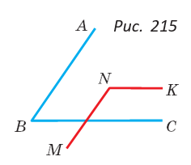
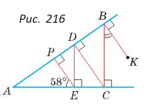
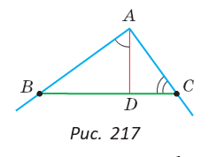
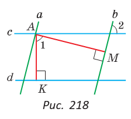

Задания к § 18
|  |
163. На рисунке 215 AB || MN, BC || NK и ∠ ABC : ∠ MNK = 1 : 2. Найдите ∠ MNK. |
|
 |
164. На рисунке 216 KB ⊥ AB, BC ⊥ AC, CD ⊥ AB, DE ⊥ AC, EP ⊥ AB, ∠ AEP = 58°. Найдите ∠ KBC. |
165. Два угла со взаимно параллельными сторонами относятся как 2 : 7. Найдите, на сколько градусов один из них больше другого.
|
 |
166. На сторонах угла A, равного 90°, взяты точки B и C (рис. 217). Из точки A на прямую BC опущен перпендикуляр AD. Сумма углов ACB и DAB равна 138°. Найдите угол ACB. |
|
 |
167. Докажите, что если a || b, c || d, AM ⊥ b, AK ⊥ d, то ∠ 1 = ∠ 2 (рис. 218). |
168. У углов ABC и MNK AB || MN, BC ⊥ NK. Выясните, как могут быть связаны градусные меры углов ABC и MNK. Рассмотрите все варианты.
169. Докажите, что прямые AB и CD, расположенные на координатной плоскости, параллельны, если A(−2; 0), B(0; 3), C(2; −4), D(4; −1).
170. Выясните, верно ли утверждение: «Если два угла равны и какие-то две их стороны параллельны, то и две другие стороны этих углов параллельны».
171. Выясните, верно ли утверждение: «Если два угла равны и какие-то две их стороны перпендикулярны, то и две другие стороны этих углов перпендикулярны».
|
|